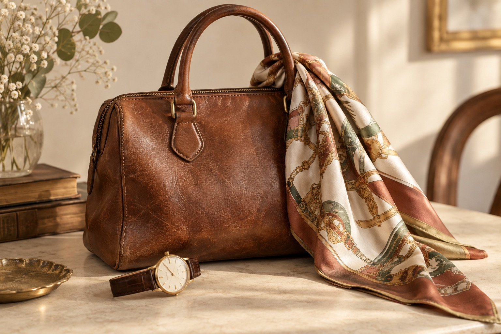
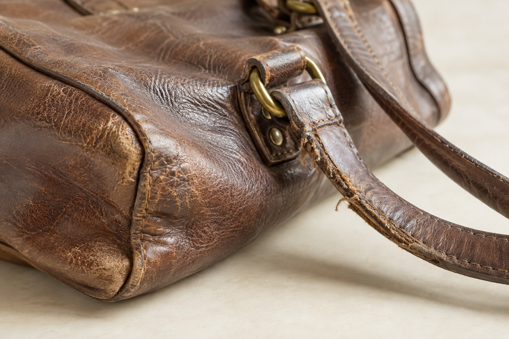

表示例 01BAG / ブランドバッグ
長年愛用したレザーバッグ
角スレ・使用感があるお品物
買取価格の表示例30,000円
金額は架空の表示例です
ブランド先生の出張買取
大切にしてきたバッグや時計。
手放すか迷っているものも、
まずは、お話を聞かせてください。
まだ売ると決めていなくても、ご相談いただけます。
※対象品目・サービス条件は本番公開前に確認予定です。

01 ご自宅から相談
02 お品物をひとつずつ確認
03 納得してからお返事
その「どうしよう」に、寄り添います。
長く使っていないバッグ。好みが変わったアクセサリー。
思い出があるからこそ、手放し方にも納得してほしい。
お品物の状態を見ながら、次の一歩を一緒に考えます。
PURCHASE RECORDS
品物も、状態も、価格も。
相談前に知りたい情報を、わかりやすく。

表示例 01BAG / ブランドバッグ
角スレ・使用感があるお品物
金額は架空の表示例です
WATCH / 時計
動作・付属品を確認して査定
金額は架空の表示例です
YOUR NEXT STEP
同じ種類でも、状態や付属品によって査定額は変わります。お手元の品について、お聞かせください。
私のお品物を相談する ↗商品写真はAI生成の仮素材です。実際の買取可否・金額は、品物の確認後にご案内します。
CONDITION GUIDE
見た目だけで、決めつけなくて大丈夫。
気になるところも、そのままお伝えください。

長く使ったバッグも、まずは状態を確認します。
しまっている間に変化した状態もご相談ください。
傷んでいる箇所や付属品の有無をお知らせください。
※品物の種類・状態によっては、お買取りできない場合があります。買取を保証するものではありません。
HOW IT WORKS
以下はご利用の流れの提案です。実際の運用に合わせて調整します。
フォームから種類や状態をお知らせください。わかる範囲で大丈夫です。
対応地域・費用・日時などを、訪問前にご案内する設計です。
査定の説明を受けてから、手放すかどうかをご検討いただきます。
LET’S TALK
あなたのお品物について、
わかることからお聞かせください。
入力内容は送信・保存されません。実際の個人情報を入力せず、架空の情報でお試しください。
必要な情報に絞った入力 → 内容確認 → 完了案内までの操作を体験できます。
この操作はデモです。内容は送信されません。
入力内容は送信・保存されていません。実際の申し込みや訪問予約は成立していません。
50〜75歳の女性を中心に、本文18px、明確な見出し、大きな操作領域を採用。黄・クリームと濃い文字色で、親しみやすさと可読性を両立しています。
参考資料の「誰が査定するか」「買取実績」「傷みのある品」の訴求を整理。売却を急がせず、自分のお品物を相談できる流れにしました。
このサイトは静的なコンペ用デモです。本番では既存WordPressの買取実績・お客様の声の更新機能を維持し、申込処理を接続します。
支給写真・査定士情報、実績・価格、対応地域・費用、媒体掲載・限定条件、資料NO.2・NO.3、個人情報の取り扱い、事業者情報を確認。未確認の実績・特典は掲載していません。